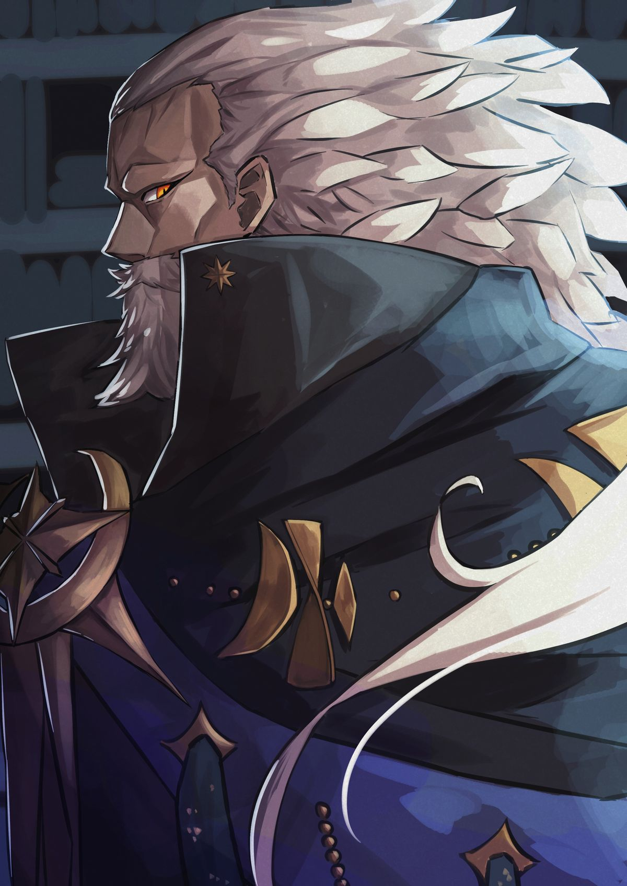

Professors
Professors who have distinguished themselves throughout a long career—typically at least twenty years—hope to be recognized with the title of esteemed professor. This honor is bestowed in recognition of groundbreaking research as well as exceptional teaching. Upon retiring, a professor receives the title of futurum emeritus (“the future retired” or “one who will have completed their service”). Futurum emeriti are held in high esteem and are welcomed to campus as guest lecturers.

Professor of Combat Basics and Dean of Valorcrest
Professor Dimitri Corvus is a Dean of Valorcrest and a well-respected combatant, renowned for his extensive experience as a monster hunter. His expertise encompasses combat theory, hunting and tracking, occult studies, curse theory, and the alchemical preparation of poisons. Having slain numerous dangerous creatures and notable figures throughout his career, Corvus brings considerable practical experience to his instruction, supplementing martial fundamentals with lessons in monster physiology, ritual practices, war history, and the supernatural forces that aspiring hunters may encounter. Recently evolved into a Crimson Scion, a form of Dhampir, he has yet to demonstrate the full extent of his newfound nature publicly.
Professor of Arcane Basics and Dean of Lorehaven
Professor Felicia Wyles is the youngest professor in Crastino Academy's history and a Dean of Lorehaven. A distinguished alumnus and former valedictorian, Felicia specializes in Arcane Basics, Magical Theory, and the crafting of Arcane Apparatus and Magic Devices. Her extensive expertise also encompasses Infernal, Abyssal, Celestial, Divine, and Chronomantic concepts, including the study of Void and Karmic Magic. As a former disciple of the renowned chronomancer Alraud Mezzier, she emphasizes a thorough understanding of magical principles and responsible experimentation. However, her notoriety extends from her recognition as the Phoenix Shaman for her mastery of fire, radiant, and Original Magic (spells made by and named after the creator), Felicia is an accomplished spellcaster, artificer, and researcher whose contributions include deciphering much of the Infernal language used in modern academia.
More to come...
Futurum Emeriti

Former Professor of Advanced Arcane Mechanics and Dean of Lorehaven
Alraud Mezzier is one of the foremost experts on the dangerous school of magic of Chronomancy. He regularly espoused his values of safe research to the students of Crastino Academy and believed that the purpose of magic is to help the world. Alraud believed, "Mages will be the bringers of orders, not the harbingers of chaos." Alraud's research garnered the attention of several institutions, including the Grand Archive, where he now works as a researcher. The professor's demeanor is meticulous and demanding of those studying under him, especially for those who attempt to practice his specialized field of magic. His cold and often mechanical personality has driven away many students, though he has shown some warmth to those he has formed close bonds with or views as kindred spirits, much like Felicia Wyles.
More to come...